Voyage aux États-Unis | Original, traduit par l'IA


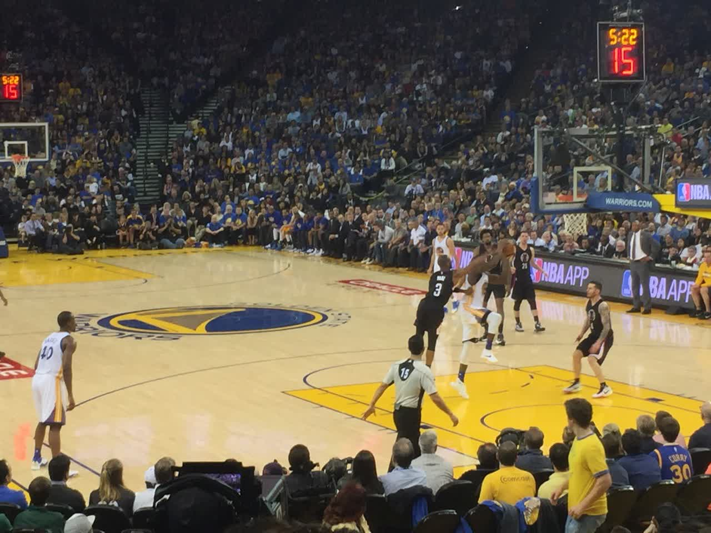

3.14~4.1 J’ai passé une quinzaine de jours aux États-Unis, visitant Stanford, Google, le Musée de l’Histoire de l’Informatique, et l’incubateur Y Combinator. J’ai vu des chefs-d’œuvre créés par des générations précédentes avec une immense curiosité et dévouement, des groupes d’élites entrant dans les bâtiments de Google pour offrir les meilleurs services au monde, des étudiants en master et doctorat plongés dans des recherches académiques de pointe dans le bâtiment Gates à Stanford, et une centaine de jeunes esprits agités dans une salle de YC, travaillant sur leurs produits. Ensuite, je suis allé à San Francisco, où j’ai rencontré beaucoup de sans-abri, entendu fréquemment les sirènes de police, et ressenti un certain malaise. J’ai fait la connaissance de l’équipe de start-up chinoise de la Silicon Valley, Mailtime, les ai aidés à corriger des bugs, et ai ainsi goûté à la vie professionnelle dans la Silicon Valley. J’ai assisté à un match de NBA, vu de près Stephen Curry et Chris Paul. J’ai visité le porte-avions USS Hornet, héros de la Seconde Guerre mondiale. J’ai également exploré Union Square, célèbre pour son rôle dans la Guerre de Sécession, le De Young Museum, le California Academy of Sciences, University Avenue où de nombreuses entreprises ont vu le jour, le Golden Gate Bridge, Baker Beach, et j’ai vu Twitter, Uber, LinkedIn, Slack à moins de trois kilomètres de mon lieu de résidence, ainsi que GitHub, Pinterest, Docker, Amazon, Dropbox à proximité, bien que je n’y sois pas allé.
Depuis longtemps, influencé par mes amis et nourrissant moi-même une grande admiration pour la Silicon Valley, l’après-midi du 2 mars, j’ai eu à nouveau l’idée de partir aux États-Unis. Sans hésiter, j’ai rempli les formulaires, et 12 jours plus tard, je me suis retrouvé en Amérique, où j’ai passé deux semaines à explorer. Le coût total a été de 20 000 RMB. Cette expérience m’a grandement motivé, car ce qui me semblait autrefois difficile est maintenant réalisé avec facilité. Auparavant, je me demandais ce qu’était un visa, ou si je devais économiser plus d’argent avant de partir, etc.
Je tiens à exprimer ma gratitude à tous ceux qui m’ont aidé tout au long de ce parcours : Xuehui, le colocataire de Xuehui, l’équipe de Mailtime, et Alex. J’ai également eu la chance de rencontrer de nombreuses personnes en chemin : chaque chauffeur Uber et Lyft, chaque hôte Airbnb, chaque personne qui m’a indiqué le chemin ou comment prendre les transports, ainsi que mes voisins de siège dans l’avion. Merci à tous ceux que j’ai croisés dans les cafés, sur les campus, dans les rues, les centres commerciaux, les trains et les bus.
“Aller aux États-Unis, ça ne peut plus attendre !”
Obtenir un visa de tourisme américain en trois jours plus tard, une semaine après, le 9 mars, j’ai reçu mon passeport avec le visa. J’ai donc réservé un billet d’avion pour le 14 mars et me suis envolé pour les États-Unis. C’était ma première fois à l’étranger, et j’étais un peu excité. Mais je savais que pour un long voyage, on n’a généralement pas besoin d’apporter grand-chose. J’ai emporté juste quelques vêtements, que j’ai mis dans un sac à ordinateur en bandoulière. J’avais aussi un ordinateur dans mon sac à dos. J’ai échangé 3000 dollars à la banque, mais cela s’est avéré inutile par la suite, car une carte bancaire Visa suffisait. Avec un sac à dos et un sac en bandoulière, j’étais prêt à partir.
L’avion a d’abord volé vers Seattle, puis a pris une correspondance pour San Jose. À l’aéroport de Seattle, vous pouvez directement prendre un petit métro pour vous rendre à la porte d’embarquement. À l’aéroport international de la capitale, on prend généralement un bus pour aller à l’embarquement. Mais ici à Seattle, c’est un système de transport entièrement automatisé, sans conducteur visible. Ces wagons automatisés transportent les passagers d’une porte d’embarquement à une autre. C’est impressionnant, je n’aurais jamais imaginé qu’un aéroport puisse fonctionner de cette manière.
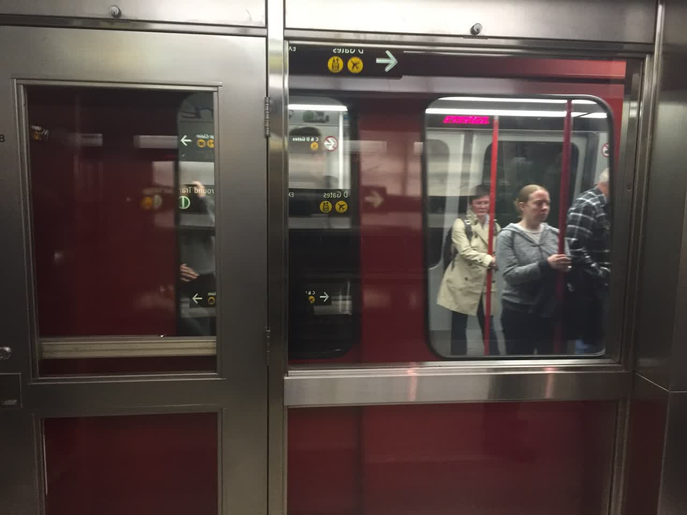

On a un peu l’impression d’arriver dans une entreprise où les tests et les déploiements sont entièrement automatisés. Il faut des talents exceptionnels pour concevoir un tel système, et les institutions concernées sont prêtes à adopter cette solution.
J’ai dû attendre six heures pour mon vol de correspondance, alors je suis allé acheter quelque chose à manger chez Burger King. Les serveurs ici sont très chaleureux. La dame chez Burger King, une grande sœur, plaisantait avec chaque client en passant, comme si elle était une vieille amie qui te taquinait. Peut-être est-ce dû à la concurrence féroce, comme le système de convoyage devant, les gens ici veulent faire de leur mieux, donc leur patron exige que les employés soient chaleureux avec les clients. En fait, les passants ordinaires sont très amicaux, donc il n’est pas surprenant que les serveurs soient si accueillants.
Une fois à San Francisco, le métro et le bus étaient au même endroit, et je ne savais pas comment m’y prendre. J’ai vu deux gars s’approcher, j’ai sorti mon téléphone et leur ai montré où je voulais aller. Ils m’ont dit d’aller en bas. Je les ai suivis jusqu’au sous-sol, ils sont passés par le tourniquet, et je suis allé acheter un ticket papier. Ils m’ont attendu une demi-minute, mais je n’avais toujours pas fini. Je leur ai dit de partir sans moi. Ensuite, ils m’ont expliqué qu’après le tourniquet, il fallait descendre encore un étage et prendre le train en face. J’ai dit d’accord, et ils sont partis.
在北京取机票的时候，我认识了一个姑娘。后来在西雅图等机时又遇到了她。我们前前后后聊了大概三四个小时。她刚从泰国旅游回来，是一名护士。她的口头禅是“It depends”（这得看情况）。在很多事情上，比如美国的创业现状、美国与中国的一些区别，我往往比较一根筋，认为一就是一，而她却总能更全面地看待问题。她用 iMessage 非常频繁。待了20天后，我也发现，iMessage 对于美国人来说就像微信对于我们一样重要。大概是因为大家都用苹果手机，iMessage 可以直接走流量，非常方便。
Stanford et University Avenue
En regardant la Silicon Valley d’en haut, c’est magnifique, les maisons semblent bien alignées. Une fois arrivé, Xuehui est venu me chercher. Xuehui était mon assistant d’enseignement en première année à l’Université de Foresterie, puis après avoir obtenu son master à l’Université de Pékin, il est venu travailler chez Google. Il est venu me chercher dans une BMW, une voiture de location qui coûte environ 300 dollars par mois. Arrivé chez lui, c’est comme une villa : au rez-de-chaussée, il y a le parking, au premier étage le salon et la cuisine, et au deuxième étage trois chambres. C’est très confortable et spacieux. Il vit avec un camarade de classe de l’université.
Je suis allé prendre un petit-déjeuner chez Google. Mon ancienne entreprise, ayant été sélectionnée pour le programme Microsoft Accelerator, avait également accès à la cantine du Microsoft Research Asia, qui était déjà très bien, mais Google est encore mieux. Après le repas, l’endroit où l’on dépose les plateaux est rotatif : on pose les plateaux d’un côté, ils tournent à moitié, et les employés les récupèrent pour les laver. J’étais vraiment impressionné. Google a déjà installé des bornes de recharge dans son parking, ce qui montre que l’ère des voitures électriques est sur le point d’arriver.

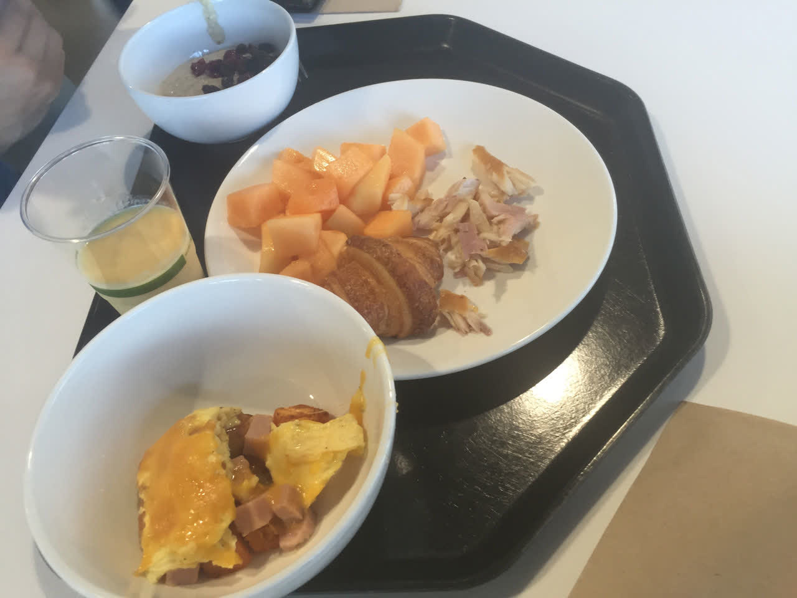
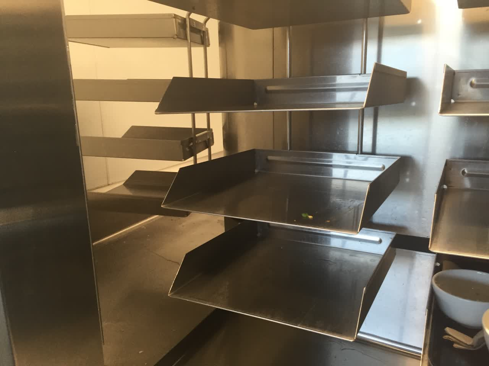

Ensuite, j’ai pris un Uber pour aller à l’Université de Stanford, ce qui m’a coûté environ 10 dollars. J’ai discuté avec le chauffeur Uber, qui était d’origine latino-américaine. Il m’a dit que dans la Silicon Valley, les startups sont partout (startups are everywhere). Il pense que les citoyens ne devraient pas avoir le droit de posséder des armes à feu, car cela pourrait encourager certains individus dangereux. Je tiens à recommander à nouveau la carte Visa, car elle est essentielle pour pouvoir se connecter à Uber.
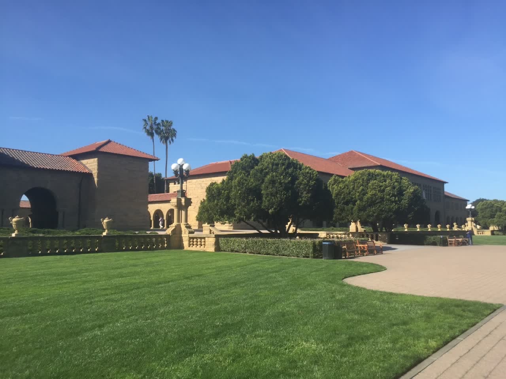

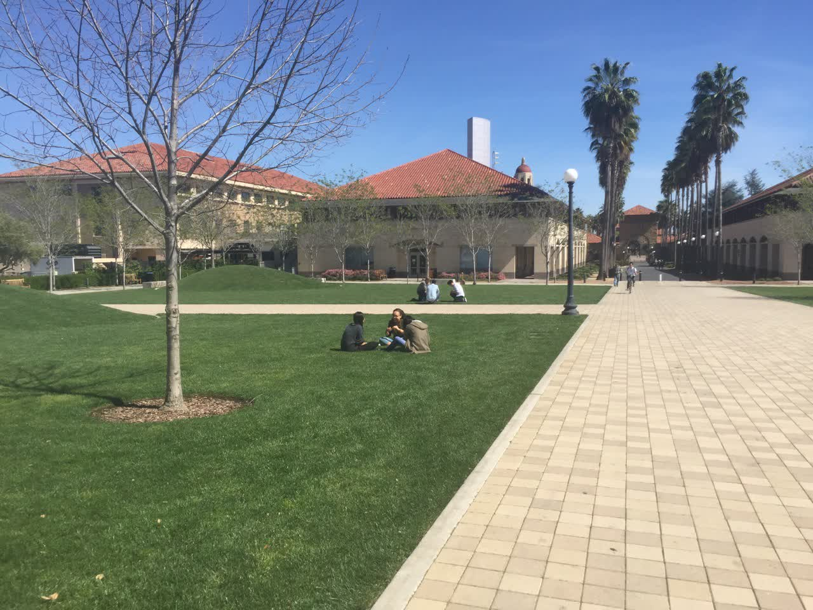

Ensuite, j’ai abordé un étudiant chinois, spécialisé en biotechnologie, venu à Stanford pour ses études supérieures. Il cherchait un endroit pour étudier. Après l’avoir accompagné jusqu’au bâtiment qu’il souhaitait, j’ai flâné dans les environs, avec l’idée de visiter le bâtiment informatique de Stanford. C’est ainsi que je suis arrivé devant le bâtiment offert par Bill Gates :

Dans le couloir, il y a une grande variété de dispositifs électroniques.


Je trouve qu’ils sont vraiment intelligents et ont une compréhension très profonde de l’éducation. J’ai fait mes études à l’Université forestière de Pékin, et bien que nos bâtiments universitaires aient également quelques présentations sur les anciens étudiants en foresterie, cela reste bien moins que ce que j’ai vu à Stanford. Dans le bâtiment Gates, chaque couloir, chaque vitrine est une exposition de ce genre. Comment les jeunes de la nouvelle génération réagiront-ils en voyant cela ?
Ensuite, j’ai flâné dans tout le bâtiment, découvrant des salles où des étudiants étaient en train de coder et de discuter, tandis que les couloirs étaient ornés de leurs travaux de recherche.


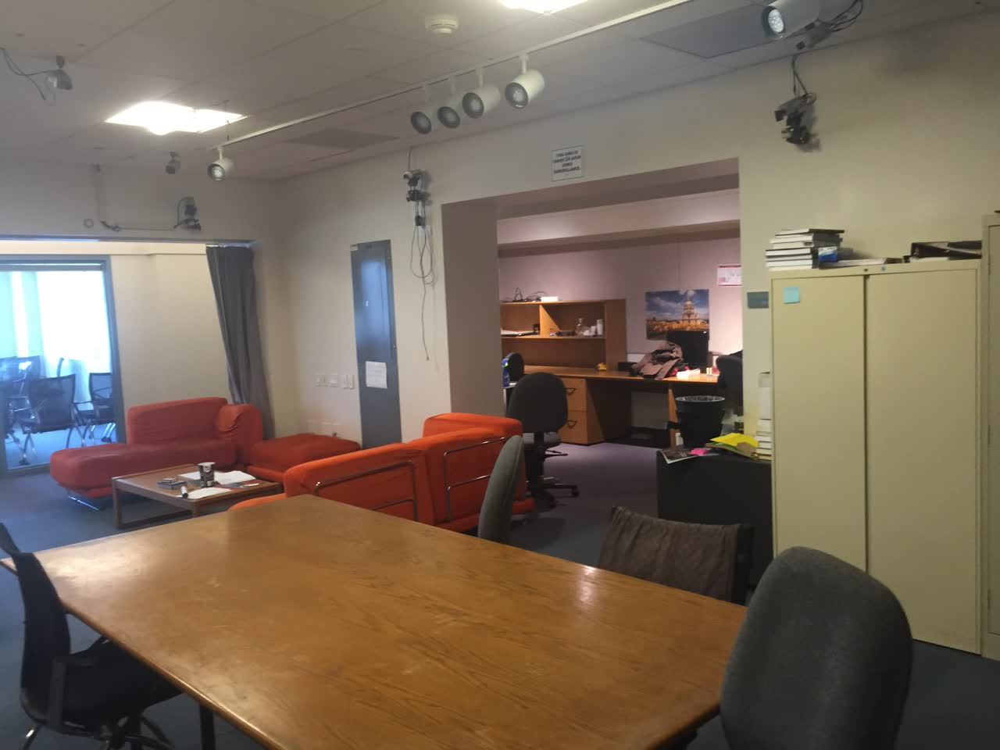

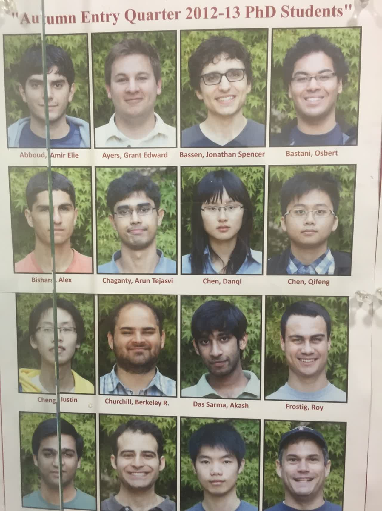
Voici deux doctorants chinois dont j’ai entendu parler, Chen Danqi et Chen Qifeng. Tous deux ont remporté des médailles d’or dans des compétitions internationales d’informatique alors qu’ils étaient encore au lycée.
Je ne peux m’empêcher de réfléchir à mon avenir. Ils étudient des technologies de pointe, comme la simulation de mouvements réalistes à l’aide d’images. Je suppose que la technologie derrière les jeux de football en temps réel provient également des universités. Quant à moi, j’ai abandonné l’université assez tôt pour me lancer dans l’entrepreneuriat. Paul Graham dit que la meilleure préparation à l’entrepreneuriat à l’université est de se projeter dans le futur et de se positionner à l’avant-garde de son domaine. Le plus crucial dans l’entrepreneuriat est de devenir un expert dans un domaine, comme les fondateurs de Google qui étaient des experts en moteurs de recherche. Les aspects commerciaux, eux, peuvent être appris rapidement une fois que vous avez lancé votre entreprise.
Ensuite, nous sommes allés à la tour Hoover pour avoir une vue panoramique du campus de Stanford.

De nombreuses facultés sont parmi les meilleures au monde, et de nombreux professeurs sont de classe mondiale. Ici, on forme des leaders de la société, qui à leur tour font des dons à l’université pour construire des bâtiments académiques, les transformant en véritables musées, influençant ainsi la jeune génération à devenir des leaders de la société, et ainsi de suite.
Ensuite, je suis allé me promener sur University Avenue, près de Stanford. Au numéro 165 se trouve le célèbre “Lucky Office”, où Google et PayPal ont vu le jour. Dans une pâtisserie, j’ai rencontré un gars, le PDG de Bevy, une entreprise en série C, qui venait de Boston pour une réunion avec des investisseurs.


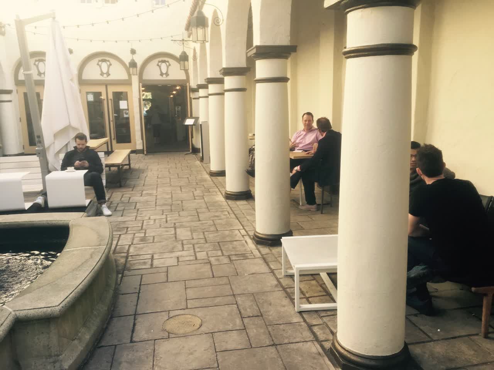
Les deux dernières photos montrent un endroit très animé, avec beaucoup de monde qui semble être des investisseurs et des entrepreneurs. On dit qu’une bonne méthode pour les distinguer est que ceux qui se penchent en arrière sont des investisseurs, tandis que ceux qui se penchent en avant sont des entrepreneurs. Pourquoi y a-t-il tant d’investisseurs et d’entrepreneurs ici ? Est-ce parce que les sociétés d’investissement sont à proximité, ou bien parce qu’il y a beaucoup d’entrepreneurs dans les environs ?
Le soir, j’ai logé dans une chambre Airbnb, et le propriétaire, un local, a vécu ici toute sa vie. Il m’a dit qu’il connaissait Steve Jobs depuis l’introduction en bourse d’Apple en 1980 et qu’il avait suivi l’évolution de l’entreprise depuis. Selon lui, la technologie est une affaire de jeunes, nécessitant énormément d’énergie. Cette sensation d’être dans la même ville que Steve Jobs est vraiment magique. Grandir dans cet environnement, entouré de technologie, est une grande source d’inspiration pour ceux qui s’y intéressent. Comme moi, quand j’étais enfant, après le lancement de Shenzhou 6, j’étais tellement excité que je rêvais de devenir astronaute. Bien que Shenzhou 6 ait été lancé dans le Shaanxi et que je sois dans le Guangdong, cela a quand même suscité en moi cette ambition. Si vous êtes très proche, vous entendez beaucoup d’histoires. Ce ne sont pas seulement des nouvelles, mais peut-être que des amis vous racontent directement ce qu’ils ont vu de leurs propres yeux.
Google et le Musée de l’Histoire de l’Informatique
Le lendemain, j’ai visité le bâtiment principal de Google. Il y a tellement de bâtiments, je n’ai pu en visiter que quelques-uns.


Ensuite, je suis allé visiter le musée de l’histoire de l’informatique. Des bouliers en bois aux ordinateurs mécaniques, puis aux ordinateurs électroniques, en passant par les disques durs, les imprimantes, les souris et autres matériels, jusqu’à l’histoire des logiciels comme Windows 1.0 et Photoshop, ainsi que l’histoire des jeux et des technologies graphiques, tout était exposé de manière exhaustive. Cela m’a fait réaliser que la technologie américaine a une longue histoire, et c’est grâce à la passion et à l’engagement de nombreuses générations sur plus d’un siècle qu’elle est devenue si exceptionnelle.


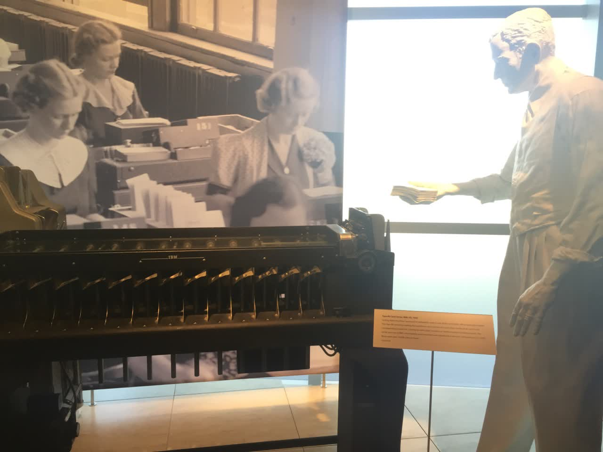
Les travailleurs ci-dessus placent les cartes sur la machine, qui les trie ensuite.


Le centre de recherche de Xerox dans la Silicon Valley, une existence légendaire, a inventé l’interface graphique, la souris, le réseau local, l’impression laser, la programmation orientée objet, l’architecture MVC et le Bitmap.
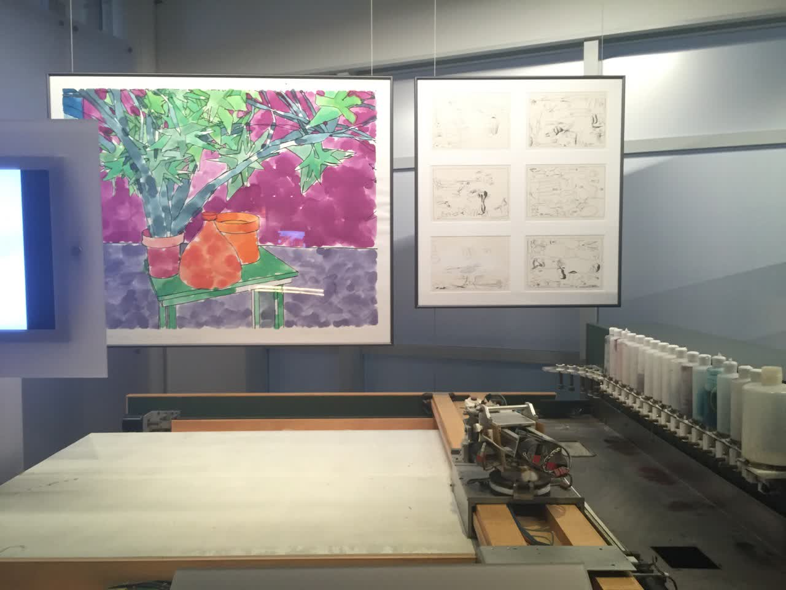
Après cela, nous sommes allés déjeuner, et c’était plutôt délicieux, une sorte de pâtes italiennes.

C’est tout pour l’instant. Dans les prochains articles, je parlerai de la densité des entreprises stars à San Francisco, des salaires là-bas, de mon expérience de 10 jours de location et de vie à San Francisco, ainsi que de quelques observations lors de ma visite sur le porte-avions USS Hornet.